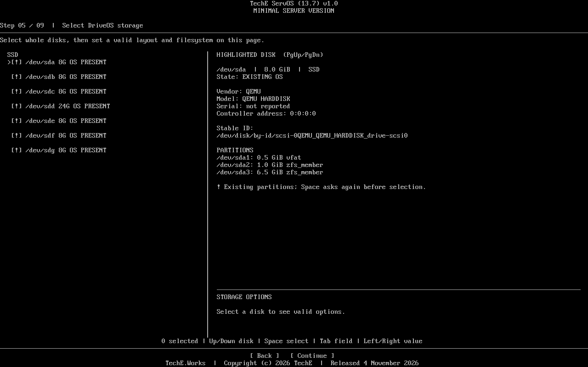
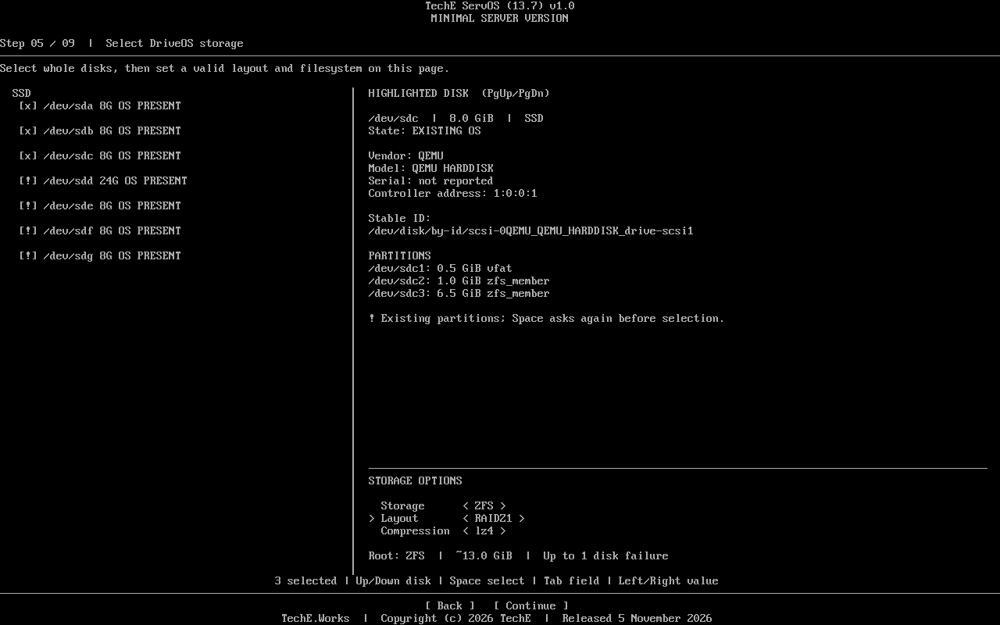
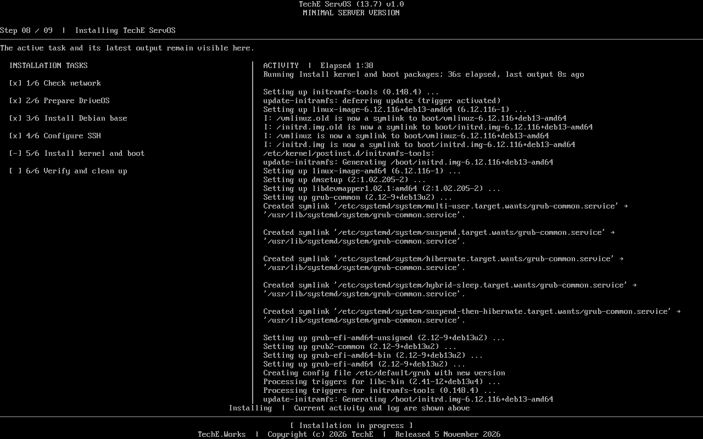
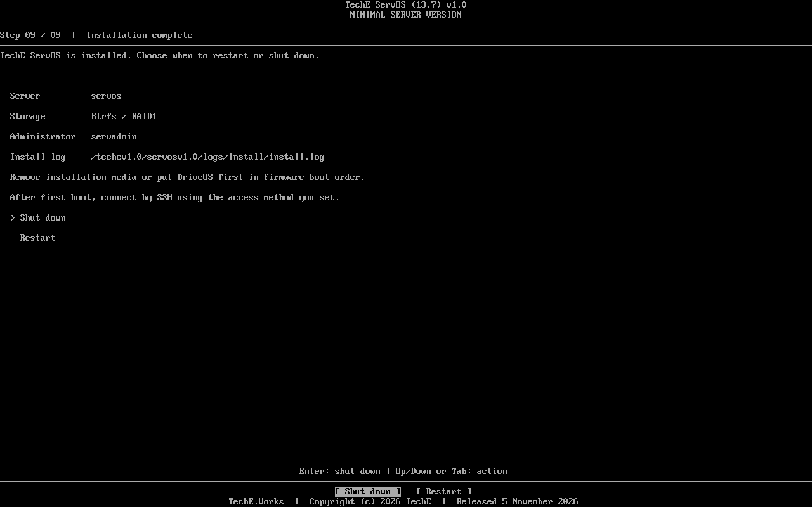

One small base. A deliberate install.
Built for an administrator bringing up a server or VM from a console. Debian Installer supports mdadm and an optional SSH network console; ServOS presents ZFS, Btrfs and mdadm boot-layout choices together in one guided storage flow. It needs a reachable Debian mirror and erases only the whole disks selected at the final typed gate. No desktop or application role is bundled.
Know the target
F03 · Inspect disk model, serial, stable ID and existing partitions before selecting the disk set.
Choose the layout
F04–F07 · Select an eligible ext4, XFS, ZFS, mdadm or Btrfs path for the chosen drive count. The menu displays capacity and failure-tolerance estimates.
Operate remotely
F09/F11 · Cold boot the installed Debian base, then use console or SSH for the next server role.
What the published ISO demonstrated
Each link names a case on the exact public ISO SHA-256 b449436c0575a0dd95d61a3a228b0cbe465f415b64dea392352b1da2c04556cf. All cases used disposable UEFI VM225; the complete conditions and open paths are in the case crosswalk.
| Storage path | Observed result | Case |
|---|---|---|
| Single-disk ext4 | Install, disk-only boot, SSH, sudo and APT. | Read result |
| Single-disk XFS | XFS root, cold boot, SSH and APT. | Read result |
| Single-disk ZFS | Healthy root and boot pools, datasets and cold boot. | Read result |
| Two-disk ZFS mirror | Cold boot from both EFI members while both disks were present. | Read result |
| mdadm RAID1 with XFS | Healthy arrays and cold boot from both EFI members. | Read result |
| Btrfs RAID1 | Static IPv4, SSH key, both EFI paths and one manual same-member recovery. | Read result |
See the path before you run it
Explore 17 wide, unaltered screens covering disk review, storage choices, installation progress and completion across versioned ServOS builds. Each image's build identity and checksum are in one gallery manifest; the published ISO's observed results are listed above.








Inspect the source. Rebuild the same image.
The public release includes its source ZIP, pinned base ISO, manifest and checksums. A public rebuild produced the same ISO SHA-256. Human and AI operators use the same pinned inputs and recorded commands.
Know the supported boundary
The documented tests cover named VM paths. Other layouts, hardware, failure modes and recovery procedures are not implied by a menu option or screenshot.
The exact public ISO does not have a complete published upstream component inventory and signature. A ZFS progress label was incorrect during one tested install. See Known Issues and Bugs and the full open-check record.
This page is a content draft for the unchanged latest published ISO. It does not assert a new S4 Production approval. Delivery status · Verification and safe first-boot checks · Support and correction.